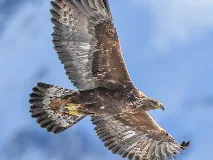
Aigle royalwiki-fr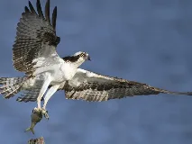
Balbuzard pêcheurwiki-fr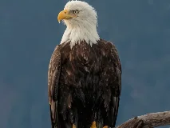
Pygargue à tête blanchewiki-fr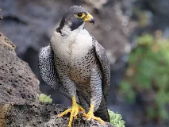
Faucon pèlerinwiki-fr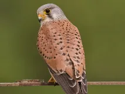
Faucon crécerellewiki-fr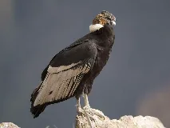
Condor des Andeswiki-fr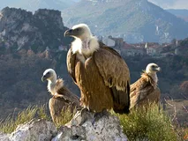
Vautour fauvebing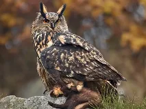
Hibou grand-ducwiki-fr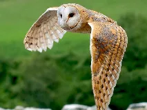
Chouette Effraiewiki-fr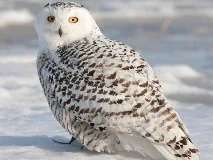
Harfang des neigeswiki-fr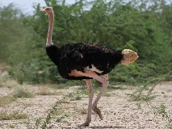
Autruchewiki-fr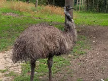
Emeuwiki-fr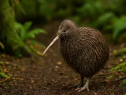
Kiwibing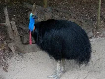
Casoarwiki-fr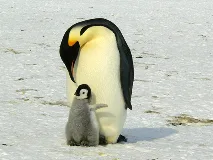
Manchot empereurwiki-fr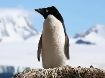
Manchot Adéliewiki-fr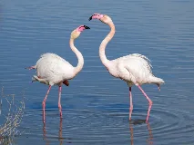
Flamant rosewiki-fr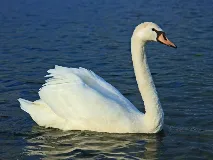
Cygne tuberculéwiki-fr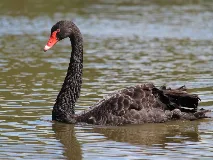
Cygne noirwiki-fr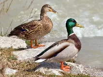
Canard colvertwiki-fr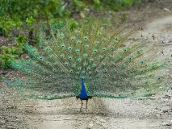
Paon bleuwiki-fr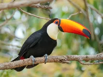
Toucan tocowiki-fr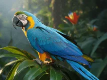
Ara bleuwiki-fr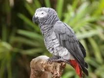
Perroquet Gris du Gabonwiki-fr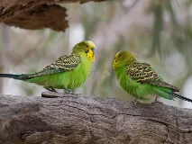
Perruche onduléewiki-fr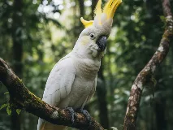
Cacatoèswiki-fr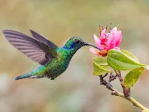
Colibriwiki-fr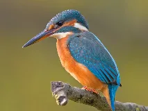
Martin-pêcheurwiki-fr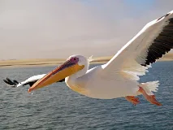
Pélican blancwiki-fr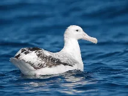
Albatros hurleurwiki-fr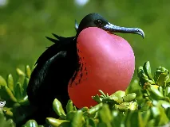
Frégatewiki-fr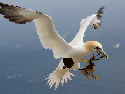
Fou de Bassanwiki-fr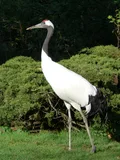
Grue du Japonbing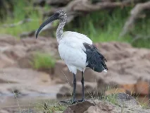
Ibis sacréwiki-fr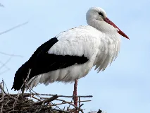
Cigogne blanchewiki-fr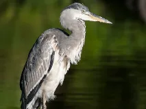
Héron cendréwiki-fr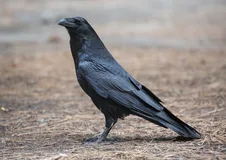
Grand Corbeauwiki-fr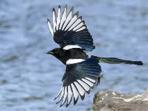
Pie bavardewiki-fr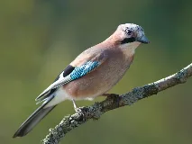
Geai des chêneswiki-fr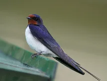
Hirondelle rustiquewiki-fr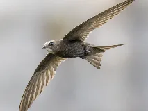
Martinet noirwiki-fr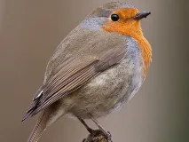
Rouge-gorgewiki-fr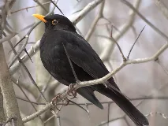
Merle noirwiki-fr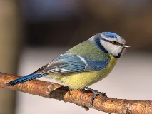
Mésange bleuewiki-fr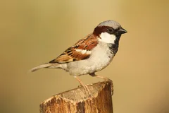
Moineau domestiquebing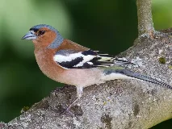
Pinson des arbreswiki-fr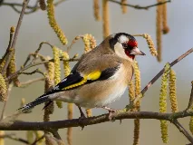
Chardonneret élégantwiki-fr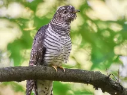
Coucou griswiki-fr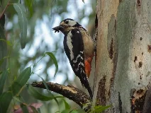
Pic épeichewiki-fr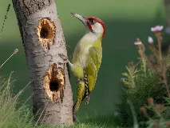
Pic vertwiki-fr